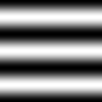

Imagick::functionImage
(バージョン情報なし。おそらく SVN 版にしか存在しないでしょう)
Imagick::functionImage — 画像に関数を適用する
説明
public bool Imagick::functionImage
( int
$function
, array $arguments
[, int $channel = Imagick::CHANNEL_DEFAULT
] )代数演算、関係演算、論理演算などを疑似画像に適用します。
» ImageMagick v6 Examples - Image Transformations — Function, Multi-Argument Evaluate も参照ください。
このメソッドは、ImageMagick バージョン 6.4.9 以降で Imagick をコンパイルした場合に使用可能です。
返り値
成功した場合に TRUE を返します。
エラー / 例外
エラー時に ImagickException をスローします。
例
例1 シヌソイドの勾配の作成
<?php
$imagick = new Imagick();
$imagick->newPseudoImage(200, 200, 'gradient:black-white');
$arguments = array(3, -90);
$imagick->functionImage(Imagick::FUNCTION_SINUSOID, $arguments);
header("Content-Type: image/png");
$imagick->setImageFormat("png");
echo $imagick->getImageBlob();
?>
上の例の出力は、 たとえば以下のようになります。

例2 多項式 (4x^2 - 4x + 1) からの勾配の作成
<?php
$imagick = new Imagick();
$imagick->newPseudoImage(200, 200, 'gradient:black-white');
$arguments = array(4, -4, 1);
$imagick->functionImage(Imagick::FUNCTION_POLYNOMIAL, $arguments);
header("Content-Type: image/png");
$imagick->setimageformat("png");
echo $imagick->getImageBlob();
?>
上の例の出力は、 たとえば以下のようになります。

例3 多項式 (4x^2 - 4x^2 + 1) をシヌソイドの勾配で変調した、複雑な勾配の作成
<?php
$imagick1 = new Imagick();
$imagick1->newPseudoImage(200, 200, 'gradient:black-white');
$arguments = array(9, -90);
$imagick1->functionImage(Imagick::FUNCTION_SINUSOID, $arguments);
$imagick2 = new Imagick();
$imagick2->newPseudoImage(200, 200, 'gradient:black-white');
$arguments = array(0.5, 0);
$imagick2->functionImage(Imagick::FUNCTION_SINUSOID, $arguments);
$imagick1->compositeimage($imagick2, Imagick::COMPOSITE_MULTIPLY, 0, 0);
header("Content-Type: image/png");
$imagick1->setImageFormat("png");
echo $imagick1->getImageBlob();
?>
上の例の出力は、 たとえば以下のようになります。
User Contributed Notes
There are no user contributed notes for this page.